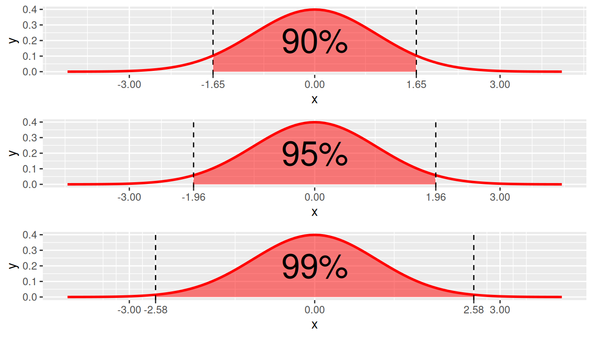

library(tidyverse)
library(moderndive)
library(dslabs)
library(infer)
library(janitor)10 Confidence Intervals
In Chapter 9, we developed a theory of repeated samples. But what does this mean for your data analysis? If you only have one sample in front of you, how are you supposed to understand properties of the sampling distribution and your estimators? In this chapter we use the mathematical theory we introduced in Sections 9.4 - 9.6 to tackle this question.
Needed Packages
Let’s load all the packages needed for this chapter (this assumes you’ve already installed them). If needed, read Section 1.3 for information on how to install and load R packages.
10.1 Combining an estimate with its precision
A confidence interval gives a range of plausible values for a parameter. It allows us to combine an estimate (e.g. \(\bar{x}\)) with a measure of its precision (i.e. its standard error). Confidence intervals depend on a specified confidence level (e.g. 90%, 95%, 99%), with higher confidence levels corresponding to wider confidence intervals and lower confidence levels corresponding to narrower confidence intervals.
Usually we don’t just begin sections with a definition, but confidence intervals are simple to define and play an important role in the sciences and any field that uses data.
You can think of a confidence interval as playing the role of a net when fishing. Using a single point-estimate to estimate an unknown parameter is like trying to catch a fish in a murky lake with a single spear, and using a confidence interval is like fishing with a net. We can throw a spear where we saw a fish, but we will probably miss. If we toss a net in that area, we have a good chance of catching the fish. Analogously, if we report a point estimate, we probably won’t hit the exact population parameter, but if we report a range of plausible values based around our statistic, we have a good shot at catching the parameter.
10.1.1 Sampling distributions of standardized statistics
In order to construct a confidence interval, we need to know the sampling distribution of a standardized statistic. We can standardize an estimate by subtracting its mean and dividing by its standard error:
\[STAT = \frac{Estimate - Mean(Estimate)}{SE(Estimate)}\] While we have seen that the sampling distribution of many common estimators are normally distributed (see Table 9.6), this is not always the case for the standardized estimate computed by \(STAT\). This is because the standard errors of many estimators, which appear on the denominator of \(STAT\), are a function of an additional estimated quantity – the sample variance \(s^2\). When this is the case, the sampling distribution for STAT is a t-distribution with a specified degrees of freedom (df). Table 10.1 shows the distribution of the standardized statistics for many of the common statistics we have seen previously.
| Statistic | Population parameter | Estimator | Standardized statistic | Sampling distribution of standardized statistic |
|---|---|---|---|---|
| Proportion | \(\pi\) | \(\widehat{\pi}\) | \(\frac{\hat{\pi} - \pi}{\sqrt{\frac{\hat{\pi}(1-\hat{\pi})}{n}}}\) | \(N(0,1)\) |
| Mean | \(\mu\) | \(\overline{x}\) or \(\widehat{\mu}\) | \(\frac{\bar{x} - \mu}{\frac{s}{\sqrt{n}}}\) | \(t(df = n-1)\) |
| Difference in proportions | \(\pi_1 -\pi_2\) | \(\widehat{\pi}_1 - \widehat{\pi}_2\) | \(\frac{(\hat{\pi}_1 - \hat{\pi}_2) - {(\pi_1 - \pi_2)}}{\sqrt{\frac{\hat{\pi}_1(1-\hat{\pi}_1)}{n_1} + \frac{\hat{\pi}_2(1 - \hat{\pi}_2)}{n_2}}}\) | \(N(0,1)\) |
| Difference in means | \(\mu_1 - \mu_2\) | \(\overline{x}_1 - \overline{x}_2\) | \(\frac{(\bar{x}_1 - \bar{x}_2) - (\mu_1 - \mu_2)}{\sqrt{\frac{s_1^2}{n_1} + \frac{s_2^2}{n_2}}}\) | \(t(df = min(n_1 - 1, n_2 - 1))\) |
| Regression intercept | \(\beta_0\) | \(b_0\) or \(\widehat{\beta}_0\) | \(\frac{b_0 - \hat{\beta}_0}{\sqrt{s_y^2[\frac{1}{n} + \frac{\bar{x}^2}{(n-1)s_x^2}]}}\) | \(t(df = n-2)\) |
| Regression slope | \(\beta_1\) | \(b_1\) or \(\widehat{\beta}_1\) | \(\frac{b_1 - \beta_1}{\sqrt{\frac{s_y^2}{(n-1)s_x^2}}}\) | \(t(df = n-2)\) |
If in fact the population standard variance was known and didn’t have to be estimated, we could replace the \(s^2\)’s in these formulas with \(\sigma^2\)’s, and the sampling distribution of \(STAT\) would follow a \(N(0,1)\) distribution.
10.1.2 Confidence Interval with the Normal distribution
If the sampling distribution of a standardized statistic is normally distributed, then we can use properties of the standard normal distribution to create a confidence interval. Recall that in the standard normal distribution:
- 90% of values are between -1.645 and +1.645.
- 95% of the values are between -1.96 and +1.96.
- 99% of values are between -2.575 and +2.575

Using this, we can define a 95% confidence interval for a population parameter as, \[Estimate \ \pm 1.96*SE(Estimate),\] or written in interval notation as \[[Estimate \ \ – \ 1.96*SE(Estimate),\ \ \ Estimate + 1.96*SE(Estimate)]\]
For example, a 95% confidence interval for the population mean \(\mu\) can be constructed based upon the sample mean as, \[[\bar{x} - 1.96\frac{\sigma}{\sqrt{n}}, \ \bar{x} + 1.96\frac{\sigma}{\sqrt{n}}],\] when the population standard deviation is known. We will show later on in this section how to construct a confidence interval for the mean using a t-distribution when the population standard deviation is unknown.
Let’s return to our football fan example. Imagine that we have data on the population of 40,000 fans, their ages and whether or not they are cheering for the home team. This simulated data exists in the data frame football_fans.
football_fans <- data.frame(home_fan = rbinom(40000, 1, 0.91),
age = rnorm(40000, 30, 8)) %>%
mutate(age = case_when(age < 0 ~ 0,
age >=0 ~ age))We see that the average age in this population is \(\mu =\) 30.064 and the standard deviation is \(\sigma =\) 8.017.
football_fans %>%
summarize(mu = mean(age),
sigma = sd(age)) mu sigma
1 30.1 8.02Let’s take a sample of 100 fans from this population and compute the average age, \(\bar{x}\) and its standard error \(SE(\bar{x})\).
sample_100_fans <- football_fans %>%
sample_n(100)
mean_age_stats <- sample_100_fans %>%
summarize(n = n(),
xbar = mean(age),
sigma = sd(football_fans$age),
SE_xbar = sigma/sqrt(n))
mean_age_stats n xbar sigma SE_xbar
1 100 29.7 8.02 0.802Because the population standard deviation is known and therefore the standarized mean follows a \(N(0,1)\) distribution, we can construct a 95% confidence interval for \(\bar{x}\) by
\[29.7 \pm 1.96*\frac{8.02}{\sqrt{100}},\] which results in the interval \([28.1, 31.3]\).
CI <- mean_age_stats %>%
summarize(lower = xbar - 1.96*SE_xbar,
upper = xbar + 1.96*SE_xbar)
CI lower upper
1 28.1 31.3A few properties are worth keeping in mind:
- This interval is symmetric. This symmetry follows from the fact that the normal distribution is a symmetric distribution. If the sampling distribution does not follow the normal or t-distributions, the confidence interval may not be symmetric.
- The multiplier 1.96 used in this interval corresponding to 95% comes directly from properties of the normal distribution. If the sampling distribution is not normal, this multiplier might be different. For example, this multiplier is larger when the distribution has heavy tails, as with the t-distribution. The multiplier will also be different if you want to use a level of confidence other than 95%. We will discuss this further in the next section.
- Rather than simply reporting our sample mean \(\bar{x} = 29.7\) as a single value, reporting a range of values via a confidence interval takes into account the uncertainty associated with the fact that we are observing a random sample and not the whole population. We saw in Chapter 9 that there is sampling variation inherent in taking random samples, and that (even unbiased) estimates will not be exactly equal to the population parameter in every sample. We know how much uncertainty/sampling variation to account for in our confidence intervals because we have known formulas for the sampling distributions of our estimators that tell us how much we expect these estimates to vary across repeated samples.
10.1.3 General Form for Constructing a Confidence Interval
In general, we construct a confidence interval using what we know about an estimator’s standardized sampling distribution. Above, we used the multiplier 1.96 because we know that \(\frac{\bar{x} - \mu}{\frac{\sigma}{\sqrt{n}}}\) follows a standard Normal distribution, and we wanted our “level of confidence” to be 95%. Note that the multiplier in a confidence interval, often called a critical value, is simply a cutoff value from either the \(t\) or standard normal distribution that corresponds to the desired level of confidence for the interval (e.g. 90%, 95%, 99%).
In general, a confidence interval is of the form:
\[\text{Estimate} \pm \text{Critical Value} * SE(\text{Estimate})\]
In order to construct a confidence interval you need to:
- Calculate the estimate from your sample
- Calculate the standard error of your estimate (using formulas found in Table 9.6)
- Determine the appropriate sampling distribution for your standardized estimate (usually \(t(df)\) or \(N(0,1)\). Refer to Table 10.1)
- Determine your desired level of confidence (e.g. 90%, 95%, 99%)
- Use 3 and 4 to determine the correct critical value
10.1.4 Finding critical values
Suppose we have a sample of \(n = 20\) and are using a t-distribution to construct a 95% confidence interval for the mean. Remember that the t-distribution is characterized by its degrees of freedom; here the appropriate degrees of freedom are \(df = n - 1 = 19\). We can find the appropriate critical value using the qt() function in R. Recall that in order for 95% of the data to fall in the middle, this means that 2.5% of the data must fall in each tail, respectively. We therefore want to find the critical value that has a probability of 0.025 to the left (i.e. in the lower tail).
qt(p = .025, df = 19, lower.tail = TRUE)[1] -2.09Note that because the t-distribution is symmetric, we know that the upper cutoff value will be +2.09 and therefore it’s not necessary to calculate it separately. For demonstration purposes, however, we’ll show how to calculate it in two ways in R: by specifying that we want the value that gives 2.5% in the upper tail (i.e. lower.tail = FALSE) or by specifying that we want the value that gives 97.5% in the lower tail. Note these two are logically equivalent.
qt(p = .025, df = 19, lower.tail = FALSE)[1] 2.09qt(p = .975, df = 19, lower.tail = TRUE)[1] 2.09Importantly, changing the degrees of freedom (by having a different sample size) will change the critical value for the t-distribution. For example, if instead we have \(n = 50\), the correct critical value would be \(\pm 2.01\). The larger the sample size for the t-distribution, the closer the critical value gets to the corresponding critical value in the N(0,1) distribution (in the 95% case, 1.96).
qt(p = .025, df = 49)[1] -2.01Recall that the critical values for 99%, 95%, and 90% confidence intervals for the \(N(0,1)\) are given by \(\pm 2.575, \pm 1.96,\)and \(\pm 1.645\) respectively. These are likely numbers you will memorize from using frequently, but they can also be calculated using the rnorm() function in R.
qnorm(.005) #99% (i.e. 0.5% in each tail)[1] -2.58qnorm(.025) #95% (i.e. 2.5% in each tail)[1] -1.96qnorm(.05) #90% (i.e. 5% in each tail)[1] -1.6410.1.5 Example
Returning to our football fans example, let’s assume we don’t know the true population standard deviation \(\sigma\), but instead we have to estimate it by \(s\), the standard deviation calculated in our sample. This means we need to calculate \(SE(\bar{x})\) using \(\frac{s}{\sqrt{n}}\) instead of \(\frac{\sigma}{\sqrt{n}}\).
mean_age_stats_unknown_sd <- sample_100_fans %>%
summarize(n = n(),
xbar = mean(age),
s = sd(age),
SE_xbar = s/sqrt(n))
mean_age_stats_unknown_sd n xbar s SE_xbar
1 100 29.7 7.78 0.778In this case, we should use the t-distribution to construct our confidence interval because - refering back to Table 10.1 - we know \(\frac{\bar{x} - \mu}{\frac{s}{\sqrt{n}}} \sim t(df = n-1)\). Recall that we took a sample of size \(n = 100\), so our degrees of freedom here are \(df = 99\), and the appropriate critical value for a 95% confidence interval is -1.984.
qt(p = .025, df = 99)[1] -1.98Therefore, our confidence interval is given by
\[29.7 \pm 1.98*\frac{7.78}{\sqrt{100}},\] which results in the interval \([28.1, 31.2]\).
CI <- mean_age_stats_unknown_sd %>%
summarize(lower = xbar - 1.98*SE_xbar,
upper = xbar + 1.98*SE_xbar)
CI lower upper
1 28.1 31.210.2 Interpreting a Confidence Interval
Like many statistics, while a confidence interval is fairly straightforward to construct, it is very easy to interpret incorrectly. In fact, many researchers – statisticians included – get the interpretation of confidence intervals wrong. This goes back to the idea of counterfactual thinking that we introduced previously: a confidence interval is a property of a population and estimator, not a particular sample. It asks: if I constructed this interval in every possible sample, in what percentage of samples would I correctly include the true population parameter? For a 99% confidence interval, this answer is 99% of samples; for a 95% confidence interval, the answer is 95% of samples, etc.
To see this, let’s return to the football fans example and consider the sampling distribution of the sample mean age. Recall that we have population data for all 40,000 fans. Below we take 10,000 repeated samples of size 100 and display the sampling distribution of the sample mean in Figure 10.2. Recall that the true population mean is 30.064
samples_football_fans <- football_fans %>%
rep_sample_n(size = 100, reps = 10000)
samp_means_football_fans <- samples_football_fans %>%
group_by(replicate) %>%
summarise(xbar = mean(age),
sigma = sd(football_fans$age),
n = n(),
SE_xbar = sigma / sqrt(n))
samp_dist_plot <-
ggplot(samp_means_football_fans) +
geom_histogram(aes(x = xbar), color = "white") +
geom_vline(xintercept = mean(football_fans$age), color = "blue")
samp_dist_plotAssume that the sample we actually observed was replicate = 77, which had \(\bar{x} =\) 29.7. If we used this sample mean to construct a 95% confidence interval, the population mean would be in this interval, right? Figure 10.3 shows a confidence interval shaded around \(\bar{x} =\) 29.7, which is indicated by the red line. This confidence interval successfully includes the true population mean.
CI <- samp_means_football_fans %>%
filter(replicate == 77) %>%
summarize(lower = xbar - 1.96*SE_xbar,
upper = xbar + 1.96*SE_xbar)
CI# A tibble: 1 × 2
lower upper
<dbl> <dbl>
1 28.1 31.2xbar <- samp_means_football_fans %>%
filter(replicate == 77) %>%
select(xbar) %>%
as.numeric()
samp_dist_plot +
shade_ci(CI) +
geom_vline(xintercept = xbar, color = "red")
Assume now that we were unlucky and drew a sample with a mean far from the population mean. One such case is replicate = 545, which had \(\bar{x} =\) 32.3. In this case, is the population mean in this interval? Figure 10.4 displays this scenario.
CI <- samp_means_football_fans %>%
filter(replicate == 545) %>%
summarize(lower = xbar - 1.96*SE_xbar,
upper = xbar + 1.96*SE_xbar)
CI# A tibble: 1 × 2
lower upper
<dbl> <dbl>
1 30.7 33.8xbar <- samp_means_football_fans %>%
filter(replicate == 545) %>%
select(xbar) %>%
as.numeric()
samp_dist_plot +
shade_ci(CI) +
geom_vline(xintercept = xbar, color = "red")In this case, the confidence interval does not include the true population mean. Importantly, remember that in real life we only have the data in front of us from one sample. We don’t know what the population mean is, and we don’t know if our estimate is the value near to the mean (Figure 10.3) or far from the mean (Figure 10.4). Also recall replicate = 545 was a legitimate random sample drawn from the population of 40,000 football fans. Just by chance, it is possible to observe a sample mean that is far from the true population mean.
We could compute 95% confidence intervals for all 10,000 of our repeated samples, and we would expect approximately 95% of them to contain the true mean; this is the definition of what it means to be “95% confident” in statistics. Another way to think about it, when constructing 95% confidence intervals, we expect that we’ll only end up with an “unlucky” sample- that is, a sample whose mean is far enough from the population mean such that the confidence interval doesn’t capture it - just 5% of the time.
For each of our 10,000 samples, let’s create a new variable captured_95 to indicate whether the true population mean \(\mu\) is captured between the lower and upper values of the confidence interval for the given sample. Let’s look at the results for the first 5 samples.
mu <- football_fans %>%
summarize(mean(age)) %>%
as.numeric()
CIs_football_fans <- samp_means_football_fans %>%
mutate(lower = xbar - 1.96*SE_xbar,
upper = xbar + 1.96*SE_xbar,
captured_95 = lower <= mu & mu <= upper)
CIs_football_fans %>%
slice(1:5)# A tibble: 5 × 8
replicate xbar sigma n SE_xbar lower upper captured_95
<int> <dbl> <dbl> <int> <dbl> <dbl> <dbl> <lgl>
1 1 30.7 8.02 100 0.802 29.2 32.3 TRUE
2 2 29.7 8.02 100 0.802 28.2 31.3 TRUE
3 3 29.5 8.02 100 0.802 28.0 31.1 TRUE
4 4 30.7 8.02 100 0.802 29.1 32.2 TRUE
5 5 30.2 8.02 100 0.802 28.6 31.7 TRUE We see that each of the first 5 confidence intervals do contain \(\mu\). Let’s look across all 10,000 confidence intervals (from our 10,000 repeated samples), and see what proportion contain \(\mu\).
CIs_football_fans %>%
summarize(sum(captured_95)/n())# A tibble: 1 × 1
`sum(captured_95)/n()`
<dbl>
1 0.951In fact, 95.06% of the 10,000 do capture the true mean. If we were to take an infinite number of repeated samples, we would see this number approach exactly 95%.
For visualization purposes, we’ll take a smaller subset of 100 of these confidence intervals and display the results in Figure 10.5. In this smaller subset, 96 of the 100 95% confidence intervals contain the true population mean.
CI_subset <- sample_n(CIs_football_fans, 100) %>%
mutate(replicate_id = seq(1:100))
ggplot(CI_subset) +
geom_point(aes(x = xbar, y = replicate_id, color = captured_95)) +
geom_segment(aes(y = replicate_id, yend = replicate_id, x = lower, xend = upper,
color = captured_95)) +
labs(x = expression("Age"),
y = "Replicate ID",
title = expression(paste("95% percentile-based confidence intervals for ",
mu, sep = ""))) +
scale_color_manual(values = c("blue", "orange")) +
geom_vline(xintercept = mu, color = "red") What if we instead constructed 90% confidence intervals? That is, we instead used 1.645 as our critical value instead of 1.96.
CIs_90_football_fans <- samp_means_football_fans %>%
mutate(lower = xbar - 1.645*SE_xbar,
upper = xbar + 1.645*SE_xbar,
captured_90 = lower <= mu & mu <= upper)
CIs_90_football_fans %>%
summarize(sum(captured_90)/n())# A tibble: 1 × 1
`sum(captured_90)/n()`
<dbl>
1 0.901As expected, when we use the 90% critical value, approximately 90% of the confidence intervals contain the true mean. Note that because we are using a smaller multiplier (1.645 vs. 1.96), our intervals are narrower, which makes it more likely that some of our intervals will not capture the true mean. Think back to the fishing analogy: you will probably capture the fish fewer times when using a small net versus a large net.
10.3 Margin of Error and Width of an Interval
Recall that we said in general, a confidence interval is of the form:
\[\text{Estimate} \pm \text{Critical Value} * SE(\text{Estimate})\]
The second element of the confidence interval (\(\text{Critical Value} * SE(\text{Estimate}\)) is often called the margin of error. Therefore, another general way of writing the confidence interval is \[\text{Estimate} \pm \text{Margin of Error}\]
Note that as the margin of error decreases, the width of the interval also decreases. But what makes the margin of error decrease? We’ve already discussed one way: by decreasing the level of confidence. That is, using a lower confidence level (e.g. 90% instead of 95%) will decrease the critical value (e.g. 1.645 instead of 1.96) and thus result in a smaller margin of error and narrower confidence interval.
There is a trade-off here between the width of an interval and the level of confidence. In general we might think narrower intervals are preferrable to wider ones, but by narrowing your interval, you are increasing the chance that your interval will not capture the true mean. That is, a 90% confidence interval is narrower than a 95% confidence interval, but it has a 10% chance of missing the mean as opposed to just a 5% chance of missing it. The trade-off in the other direction is this: a 99% confidence level has a higher chance of capturing the true mean, but it might be too wide of an interval to be practically useful. This Garfield comic demonstrates how there are drawbacks to using a higher-confidence (and therefore wider) interval.
A second way you can decrease the margin of error is by increasing sample size. Recall that all of our formulas for standard errors involve \(n\) on the denominator (see Table 9.6), so by increasing sample size on the denominator, we decrease our standard error. We also saw this demonstrated via simulations in Section 9.5. Because our margin of error formula involves standard error, increasing the sample size decreases the standard error and thus decreases the margin of error. This fits with our intuition that having more infomation (i.e. a larger sample size) will give us a more precise estimate (i.e. a narrower confidence interval) of the parameter we’re interested in.
10.4 Example: One proportion
Let’s revisit our exercise of trying to estimate the proportion of red balls in the bowl from Chapter 9. We are now interested in determining a confidence interval for population parameter \(\pi\), the proportion of balls that are red out of the total \(N = 2400\) red and white balls.
We will use the first sample reported from Ilyas and Yohan in Subsection 9.2.2 for our point estimate. They observed 21 red balls out of the 50 in their shovel. This data is stored in the tactile_shovel1 data frame in the moderndive package.
tactile_shovel1# A tibble: 50 × 1
color
<chr>
1 white
2 red
3 red
4 red
5 red
6 red
7 red
8 white
9 red
10 white
# ℹ 40 more rows10.4.1 Observed Statistic
We can use our data wrangling tools to compute the proportion that are red in this data.
prop_red_stats <- tactile_shovel1 %>%
summarize(n = n(),
pi_hat = sum(color == "red") / n,
SE_pi_hat = sqrt(pi_hat*(1-pi_hat)/n))
prop_red_stats# A tibble: 1 × 3
n pi_hat SE_pi_hat
<int> <dbl> <dbl>
1 50 0.42 0.0698As shown in Table 10.1, the appropriate distribution for a confidence interval of \(\hat{\pi}\) is \(N(0,1)\), so we can use the critical value 1.96 to construct a 95% confidence interval.
CI <- prop_red_stats %>%
summarize(lower = pi_hat - 1.96*SE_pi_hat,
upper = pi_hat + 1.96*SE_pi_hat)
CI# A tibble: 1 × 2
lower upper
<dbl> <dbl>
1 0.283 0.557We are 95% confident that the true proportion of red balls in the bowl is between 0.283 and 0.557. Recall that if we were to construct many, many 95% confidence intervals across repeated samples, 95% of them would contain the true mean; so there is a 95% chance that our one confidence interval (from our one observed sample) does contain the true mean.
10.5 Example: Comparing two proportions
If you see someone else yawn, are you more likely to yawn? In an episode of the show Mythbusters, they tested the myth that yawning is contagious. The snippet from the show is available to view in the United States on the Discovery Network website here. More information about the episode is also available on IMDb here.
Fifty adults who thought they were being considered for an appearance on the show were interviewed by a show recruiter (“confederate”) who either yawned or did not. Participants then sat by themselves in a large van and were asked to wait. While in the van, the Mythbusters watched via hidden camera to see if the unaware participants yawned. The data frame containing the results is available at mythbusters_yawn in the moderndive package. Let’s check it out.
mythbusters_yawn# A tibble: 50 × 3
subj group yawn
<int> <chr> <chr>
1 1 seed yes
2 2 control yes
3 3 seed no
4 4 seed yes
5 5 seed no
6 6 control no
7 7 seed yes
8 8 control no
9 9 control no
10 10 seed no
# ℹ 40 more rows- The participant ID is stored in the
subjvariable with values of 1 to 50. - The
groupvariable is either"seed"for when a confederate was trying to influence the participant or"control"if a confederate did not interact with the participant. - The
yawnvariable is either"yes"if the participant yawned or"no"if the participant did not yawn.
We can use the janitor package to get a glimpse into this data in a table format:
mythbusters_yawn %>%
tabyl(group, yawn) %>%
adorn_percentages() %>%
adorn_pct_formatting() %>%
# To show original counts
adorn_ns() group no yes
control 75.0% (12) 25.0% (4)
seed 70.6% (24) 29.4% (10)We are interested in comparing the proportion of those that yawned after seeing a seed versus those that yawned with no seed interaction. We’d like to see if the difference between these two proportions is significantly larger than 0. If so, we’d have evidence to support the claim that yawning is contagious based on this study.
We can make note of some important details in how we’re formulating this problem:
- The response variable we are interested in calculating proportions for is
yawn - We are calling a
successhaving ayawnvalue of"yes". - We want to compare the proportion of yeses by
group.
To summarize, we are looking to examine the relationship between yawning and whether or not the participant saw a seed yawn or not.
10.5.1 Compute the point estimate
Note that the parameter we are interested in here is \(\pi_1 - \pi_2\), which we will estimate by \(\hat{\pi_1} - \hat{\pi_2}\). Recall that the standard error is given by \(\sqrt{\frac{\hat{\pi}_1(1-\hat{\pi}_1)}{n_1} + \frac{\hat{\pi}_2(1 - \hat{\pi}_2)}{n_2}} = \sqrt{Var(\hat{\pi}_1) + Var(\hat{\pi}_2)}\). We can use group_by() to calculate \(\hat{\pi}\) for each group (i.e. \(\hat{\pi}_1\) and \(\hat{\pi}_2\)) as well as the corresponding variance components for each group (i.e. \(Var(\hat{\pi}_1)\) and \(Var(\hat{\pi}_2)\)).
prop_yes_stats <- mythbusters_yawn %>%
group_by(group) %>%
summarize(n = n(),
pi_hat = sum(yawn == "yes")/n,
var_pi_hat = pi_hat*(1-pi_hat)/n)
prop_yes_stats# A tibble: 2 × 4
group n pi_hat var_pi_hat
<chr> <int> <dbl> <dbl>
1 control 16 0.25 0.0117
2 seed 34 0.294 0.00611We can then combine these estimates to obtain estimates for \(\hat{\pi_1} - \hat{\pi_2}\) and \(SE(\hat{\pi_1} - \hat{\pi_2})\), which are needed for our confidence interval.
diff_prop_yes_stats <- prop_yes_stats %>%
summarize(diff_in_props = diff(pi_hat),
SE_diff = sqrt(sum(var_pi_hat)))
diff_prop_yes_stats# A tibble: 1 × 2
diff_in_props SE_diff
<dbl> <dbl>
1 0.0441 0.134This diff_in_props value represents the proportion of those that yawned after seeing a seed yawn (0.2941) minus the proportion of those that yawned with not seeing a seed (0.25). Using the \(N(0,1)\) distribution, we can construct the following 95% confidence interval.
CI <- diff_prop_yes_stats %>%
summarize(lower = diff_in_props - 1.96*SE_diff,
upper = diff_in_props + 1.96*SE_diff)
CI# A tibble: 1 × 2
lower upper
<dbl> <dbl>
1 -0.218 0.306The confidence interval shown here includes the value of 0. We’ll see in Chapter 12 further what this means in terms of this difference being statistically significant or not, but let’s examine a bit here first. The range of plausible values for the difference in the proportion of those that yawned with and without a seed is between -0.218 and 0.306.
Therefore, we are not sure which proportion is larger. If the confidence interval was entirely above zero, we would be relatively sure (about “95% confident”) that the seed group had a higher proportion of yawning than the control group. We, therefore, have evidence via this confidence interval suggesting that the conclusion from the Mythbusters show that “yawning is contagious” being “confirmed” is not statistically appropriate.
10.6 Exercises
10.6.1 Conceptual
Exercise 10.1 Which of the following is the correct general form for constructing a confidence interval?
- Critical Value \(\pm\) Estimate*SD(Estimate)
- Critical Value \(\pm\) Estimate*SE(Estimate)
- Estimate \(\pm\) Critical Value*SD(Estimate)
- Estimate \(\pm\) Critical Value*SE(Estimate)
- SD(Estimate) \(\pm\) Critical Value*Estimate
- SE(Estimate) \(\pm\) Critical Value*Estimate
Exercise 10.2 Which of the following are correct regarding a 90% confidence interval? Select all that apply.
- We are 90% confident that the true mean is within any given 90% confidence interval
- There is a 90% chance that the true mean is within any given 90% confidence interval
- 90% of all of the data values in the population fall within the 90% confidence interval
- Approximately 90% of confidence intervals contain the true mean
Exercise 10.3 As the margin of error decreases, the width of the confidence interval increases.
- True
- False
Exercise 10.4 As sample size increases, the margin of error decreases.
- True
- False
Exercise 10.5 How will the margin of error change if you both increase the sample size and decrease the confidence level (ex: from 95% down to 90%)?
- decrease
- increase
- stay the same
- impossible to tell
Exercise 10.6 You are trying to calculate the standard error but don’t know the true population standard deviation. Which of the following formulas should you use to calculate \(SE(\bar{x})\) ?
- \(SE(\bar{x}) = s\)
- \(SE(\bar{x}) = \frac{s}{n}\)
- \(SE(\bar{x}) = \frac{s}{\sqrt{n}}\)
- \(SE(\bar{x}) = \frac{\sigma}{\sqrt{n-1}}\)
- \(SE(\bar{x}) = \frac{s}{\sqrt{n-1}}\)
Exercise 10.7 You are calculating a confidence interval for the difference in average ACT scores between private high schools and public high schools in Illinois. Upon surveying 15 private high schools you calculate an average ACT score of 25 with a standard deviation of 2. And for 35 public high schools you calculate an average ACT score of 23 with a standard deviation of 3. Which of the following is used to calculate one of the 90% critical values?
qnorm(p = 0.10)qnorm(p = 0.05)qt(p = 0.10, df = 14)qt(p = 0.05, df = 14)qt(p = 0.10, df = 34)qt(p = 0.05, df = 34)
Exercise 10.8 You are calculating a confidence interval for the proportion of US citizens who have never left their home state. In a random survey, you found 14 out of 200 people have not left their home state. Which of the following is used to calculate one of the 97% critical values?
qt(p = 0.07, df = 199)qnorm(p = 0.97)qnorm(p = 0.03)qnorm(p = 0.015)qt(p = 0.03, df = 199)
Exercise 10.9 What is the standard error of the estimator in Exercise 10.8?
- 0.00033
- 0.01814
- 0.03915
- 3.87992
- 0.06819
10.6.2 Application
The application exercises use the nba_sample dataset from the ISDSdatasets package. This is a random sample obtained from the nba dataset.
Exercise 10.10 Using nba_sample, we are interested in determining the number of points that Michael Jordan scored per game (pts) on average. Develop an 85% confidence interval for this variable.
Exercise 10.11 Using nba_sample determine the proportion of wins for LeBron James. Develop a 99% confidence interval for this variable.
Exercise 10.12 Using nba_sample determine if LeBron James or Kobe Bryant won more games. In other words, find the 90% confidence interval for the difference in proportion of wins (win) between LeBron James and Kobe Bryant.
Exercise 10.13 Using nba_sample determine if Michael Jordan or Kobe Bryant were better at free throws. In other words, find the 95% confidence interval for the difference in average free throw percent (ft_percent) between Michael Jordan and Kobe Bryant.
10.6.3 Advanced
Exercise 10.14 Using the nba_sample dataset, determine if our players play better at home or away games. Specify how you chose to evaluate what constitutes “playing better” and specify your confidence level used.
Exercise 10.15 Basketball reference keeps very diligent and accurate records for basketball games, so this is one of the rare instances when we have the entire population of games played for Michael Jordan, Kobe Bryant, and LeBron James through the 2021 season. This census is our nba dataset. In the above problems we used a random sample to demonstrate how a sample is used to approximate the population parameters. Calculate the population parameters relevant to Exercise 10.10, Exercise 10.11, Exercise 10.12, and Exercise 10.13 using the nba dataset and specify if your confidence interval captured the true population.